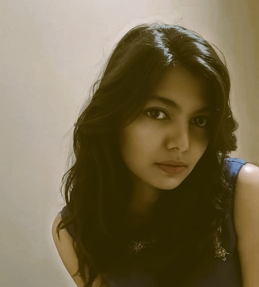
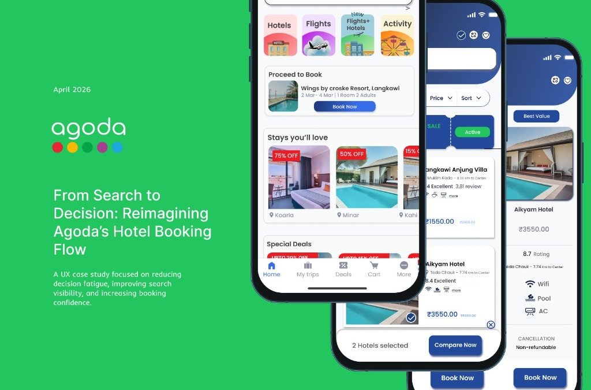
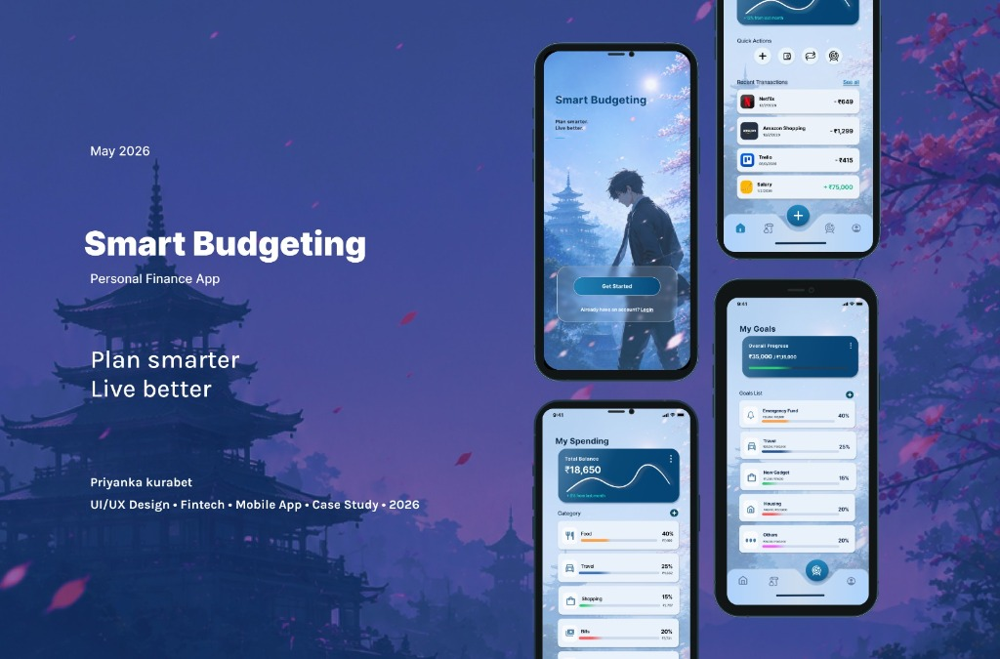
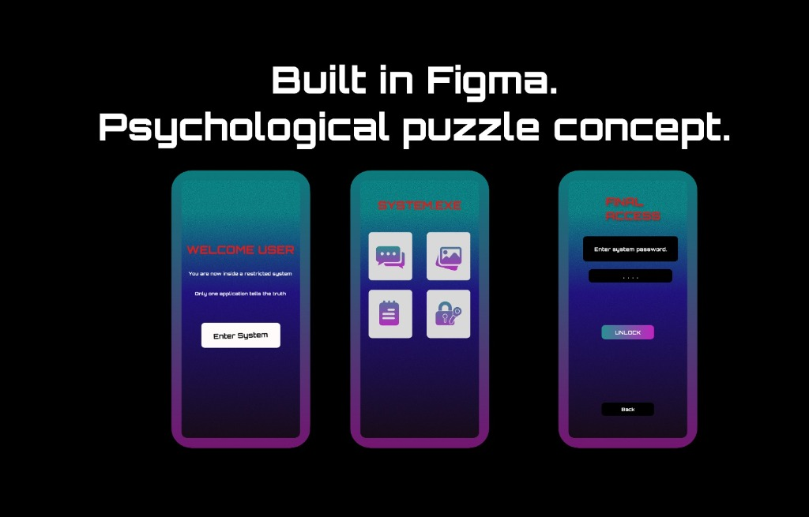

UI/UX & Interactive Experience Designer
Designing immersive digital experiences through interaction, storytelling, and thoughtful user experiences.

Selected Work
Three case studies that show how I think about product clarity, emotional pacing, and interfaces that feel memorable without losing usability.

A UX redesign focused on improving usability, booking flow, and overall travel experience.
A modern budgeting experience focused on smarter spending and intuitive financial management.


An experimental psychological ‘phone inside phone’ concept exploring suspense and interaction-driven storytelling.
About
I’m a UI/UX and interactive experience designer focused on blending usability, storytelling, and visual emotion through modern digital experiences. I like work that feels calm at first glance and layered on a second read.
Skills
A compact toolkit built for research, interface design, wireframing, and translating ideas into clean visual systems.